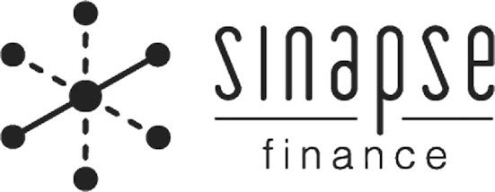

02 / Sinapse Finance
Sinapse Finance
Alguns clientes da Sinapse preferiam pedir ao consultor que preenchesse um formulário por eles. Como designer principal, investiguei o que dificultava o envio e desenhei uma forma de os clientes acompanharem as operações financeiras que a Sinapse automatizava.
Trabalhei com outra designer e com as equipes de produto, finanças e desenvolvimento. Nas gravações e nos relatos sobre o formulário, uma dificuldade aparecia na hora de anexar um arquivo. O cliente tinha dúvidas sobre o tamanho permitido e, quando o envio falhava, precisava descobrir como corrigir o erro. Reescrevi os rótulos dos campos e coloquei as orientações onde surgiam as dúvidas.
Em cerca de duas semanas, acompanhei o trabalho da investigação à primeira medição após o lançamento. Os envios concluídos passaram de 58% para cerca de 65% no segundo período de medição, que foi mais curto que o primeiro. No Google Analytics, a taxa de rejeição caiu de cerca de 75% para menos de 40%, e o tempo médio também diminuiu. A equipe também considerou extrair informações dos documentos para poupar digitação. A ideia ainda não tinha sido implementada quando saí.
As automações financeiras já funcionavam, mas o cliente não conseguia ver por quais etapas uma operação passava. Estudei as regras com os especialistas financeiros e os desenvolvedores. No primeiro desenho, o cliente podia arrastar as etapas em um diagrama. Cada combinação criava novas exceções que a equipe teria de prever. Optei por cartões na ordem de execução, com um título que explicava a função de cada etapa. Se algo desse errado, o cliente poderia consultar o erro e desativar a automação.
Tive pouco acesso aos clientes para testar essa proposta. Quem já usava programas de produtividade conseguiu seguir a sequência dos cartões, embora alguns conceitos financeiros gerassem dúvidas. Esses testes me ajudaram a ajustar a navegação. Para entender como alguém investigaria um erro durante o trabalho, eu precisaria acompanhar clientes da Sinapse usando a ferramenta. A equipe aprovou a proposta e iniciou o desenvolvimento. Saí antes da entrega completa. Hoje, combinaria essas conversas com os clientes já no início do projeto.